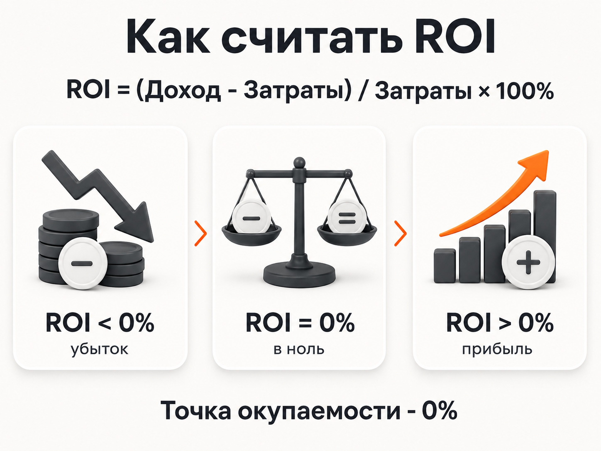
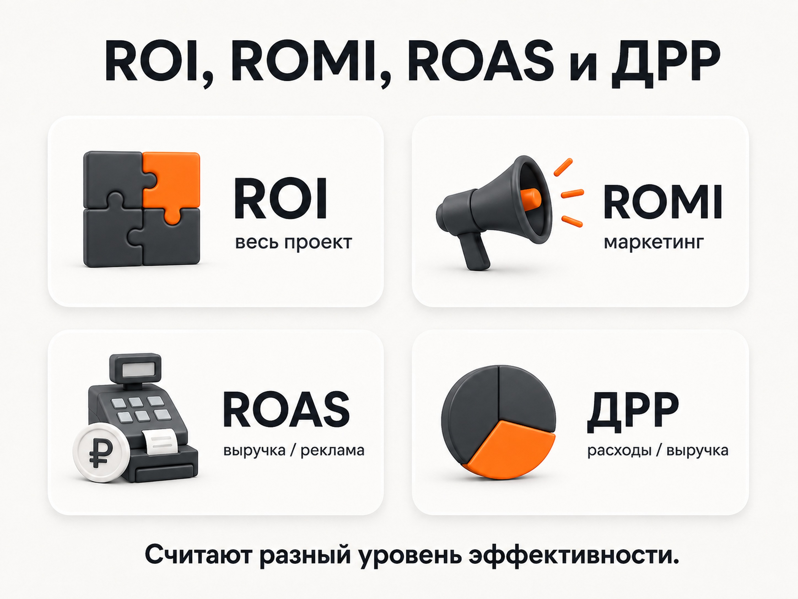
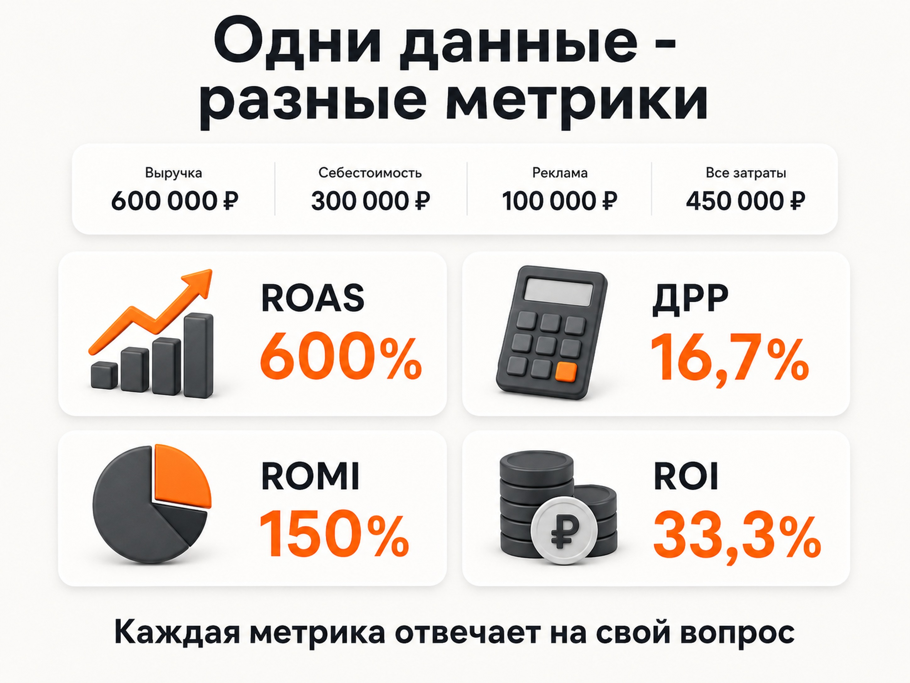

Блог о платном трафике
ROI в маркетинге: что это и как считать
Что показывает ROI в маркетинге, как рассчитать окупаемость вложений по формуле и не перепутать ROI с ROMI, ROAS и ДРР. Примеры расчета.
ROI в маркетинге - это показатель окупаемости вложений. Он помогает ответить на простой вопрос: сколько бизнес заработал или потерял относительно денег, которые вложил.
ROI расшифровывается как Return on Investment - возврат инвестиций.
Базовая формула:
ROI = (Доход - Затраты) / Затраты × 100%
Если результат положительный, вложение принесло больше денег, чем потребовало расходов. ROI 0% означает точку безубыточности. Отрицательное значение показывает, что затраты оказались выше полученного результата.
Но в маркетинге с ROI постоянно возникает путаница. Одни называют этим словом окупаемость всего проекта, другие - только рекламы. Поэтому перед расчетом нужно определить, какие именно доходы и расходы мы считаем.
Как рассчитать ROI
Возьмем простой пример.
Компания получила от проекта 600 000 рублей дохода. Все расходы, связанные с проектом, составили 400 000 рублей.
Расчет:
ROI = (600 000 - 400 000) / 400 000 × 100% = 50%
ROI равен 50%.
Это означает, что после возврата вложенных 400 000 рублей проект дополнительно принес 200 000 рублей. На каждый вложенный рубль получили 50 копеек результата сверх первоначальных затрат.
Здесь есть частая ошибка в интерпретации.
ROI 100% не означает, что бизнес просто окупил затраты. При стандартной формуле точка безубыточности - это ROI 0%.
Например:
- ROI -30% - часть вложенных денег потеряна;
- ROI 0% - затраты полностью вернулись, но прибыли сверху нет;
- ROI 50% - чистый результат составляет половину вложенной суммы;
- ROI 100% - чистый результат равен первоначальным вложениям;
- ROI 200% - чистый результат в два раза больше вложений.

Что включать в затраты при расчете ROI
Главная сложность обычно не в формуле, а в исходных данных.
Если я хочу узнать реальный ROI проекта, недостаточно взять только рекламный бюджет. Нужно определить все расходы, которые относятся к рассматриваемому результату.
В зависимости от бизнеса это могут быть:
- себестоимость товара;
- производство;
- доставка;
- рекламный бюджет;
- работа подрядчиков;
- зарплата сотрудников;
- комиссии;
- сервисы;
- создание сайта или посадочной страницы;
- другие затраты, непосредственно связанные с проектом.
Состав расходов зависит от того, что именно мы оцениваем.
Если нужно понять эффективность всего нового направления бизнеса, берем расходы этого направления.
Если задача - оценить именно маркетинг, удобнее использовать ROMI.
Если нужно быстро сравнить рекламные кампании, чаще подходят ROAS или ДРР.
В этом и заключается основная разница между похожими показателями.
ROI, ROMI, ROAS и ДРР - в чем разница
Эти метрики связаны между собой, но отвечают на разные вопросы.
| Показатель | Что показывает | Базовая формула |
|---|---|---|
| ROI | Окупаемость инвестиций в проект или направление | (Доход - все затраты) / все затраты × 100% |
| ROMI | Окупаемость вложений в маркетинг | (Результат маркетинга - расходы на маркетинг) / расходы на маркетинг × 100% |
| ROAS | Сколько выручки принес каждый рубль рекламного бюджета | Выручка от рекламы / рекламные расходы × 100% |
| ДРР | Какую долю выручки съела реклама | Рекламные расходы / выручка от рекламы × 100% |
На практике граница между ROI и ROMI в статьях и аналитических системах иногда размывается. ROMI специально выделяет именно маркетинговые инвестиции, тогда как ROI является более широким понятием.

Разберем разницу на одних цифрах.
Допустим, реклама принесла:
- выручка - 600 000 рублей;
- себестоимость проданного товара - 300 000 рублей;
- рекламный бюджет - 100 000 рублей;
- другие расходы на маркетинг - 20 000 рублей;
- прочие расходы проекта - 30 000 рублей.
ROAS
Для ROAS берем только выручку от рекламы и рекламный бюджет:
ROAS = 600 000 / 100 000 × 100% = 600%
Каждый рубль рекламного бюджета принес 6 рублей выручки.
Но ROAS ничего не говорит о себестоимости товара. Именно поэтому высокий ROAS еще не гарантирует высокую прибыль.
ROAS в маркетинге: что это и как считать
ДРР
ДРР показывает тот же процесс с противоположной стороны:
ДРР = 100 000 / 600 000 × 100% = 16,7%
То есть реклама съела 16,7% полученной выручки.
Если ROAS и ДРР рассчитываются по одним и тем же расходам и доходам, показатели фактически обратны друг другу.
ДРР в рекламе: что это и как считать
ROMI
Для оценки маркетинга я бы уже учитывал не только оплату рекламной площадке.
Маркетинговые расходы:
100 000 + 20 000 = 120 000 рублей.
После вычета себестоимости с продаж остается:
600 000 - 300 000 = 300 000 рублей.
Тогда:
ROMI = (300 000 - 120 000) / 120 000 × 100% = 150%
В таком расчете каждый рубль маркетинговых расходов принес еще 1,5 рубля результата после учета себестоимости и самого маркетинга.
Можно встретить и упрощенный ROMI от выручки:
(600 000 - 120 000) / 120 000 × 100% = 400%.
Математически расчет правильный, но для бизнеса он выглядит намного привлекательнее, потому что вообще не учитывает себестоимость товара. Поэтому при сравнении ROMI всегда нужно смотреть не только на итоговый процент, но и на то, что автор расчета назвал доходом.
ROI
Для ROI всего проекта берем уже полный набор затрат:
300 000 + 100 000 + 20 000 + 30 000 = 450 000 рублей.
Получаем:
ROI = (600 000 - 450 000) / 450 000 × 100% = 33,3%
Из одних исходных данных мы получили:
- ROAS - 600%;
- ДРР - 16,7%;
- ROMI - 150%;
- ROI - 33,3%.
Ни одна из цифр не противоречит другой. Просто каждая отвечает на свой вопрос.

Какой ROI считается хорошим
Универсального хорошего ROI для маркетинга нет.
Формально положительное значение означает, что вложение окупилось. Но для принятия решения этого мало.
ROI 10% за месяц и ROI 10% за два года - совершенно разные результаты.
Нужно учитывать:
- период расчета;
- риски;
- объем вложений;
- скорость возврата денег;
- альтернативные способы использовать капитал;
- повторные продажи;
- LTV клиента;
- возможность масштабировать результат.
Поэтому я бы не ориентировался на таблицы вроде «ROI выше 100% - хороший, ниже 100% - плохой».
Сначала нужно определить экономику конкретного бизнеса и минимальную доходность, при которой вложение вообще имеет смысл.
Почему ROI рекламы легко посчитать неправильно
Сравнили расходы и продажи разных периодов
Особенно заметна эта проблема в бизнесах с длинным циклом сделки.
Например, в августе потратили 300 000 рублей на рекламу. Часть этих лидов купит только в сентябре или октябре.
Если сравнить августовский расход только с августовскими продажами, реклама будет выглядеть хуже реального результата.
Обратная ситуация тоже возможна. Продажи августа могут быть получены из лидов, за привлечение которых платили еще в июне.
Поэтому при длинной воронке лучше связывать расходы с конкретными привлеченными клиентами и отслеживать их до продажи.
Посчитали всю выручку результатом рекламы
Если бизнес и без рекламы получает клиентов из органического поиска, рекомендаций, повторных продаж и других источников, нельзя автоматически записывать всю выручку в результат рекламной кампании.
Нужно понимать, какие продажи действительно связаны с оцениваемым каналом.
Забыли про себестоимость
Это одна из самых опасных ошибок.
Реклама потратила 100 000 рублей и принесла 500 000 рублей выручки.
На первый взгляд результат отличный.
Но если производство или закупка проданного товара обошлись еще в 380 000 рублей, после рекламных расходов бизнес фактически потерял деньги.
Именно поэтому для быстрой оценки рекламного канала удобно смотреть ROAS и ДРР, а для ответа на вопрос о прибыльности нужно идти глубже в экономику.
Учли рекламный бюджет, но забыли остальные расходы
Настройка рекламы, агентская комиссия, производство креативов, коллтрекинг и другие необходимые расходы тоже стоят денег.
Если задача - оценить реальную отдачу маркетинга, их нельзя просто убрать из расчета.
Как считать ROI рекламы на практике
Я бы использовал такую последовательность.
1. Определите, что именно оцениваете.
Всю компанию, направление, маркетинг или конкретную рекламную кампанию.
2. Выберите период.
Все доходы и расходы должны относиться к сопоставимому периоду или одной когорте привлеченных клиентов.
3. Соберите реальные расходы.
Не только рекламный бюджет, если расчет предполагает более широкий уровень затрат.
4. Свяжите рекламу с продажами.
Для простой интернет-торговли иногда достаточно данных электронной коммерции. Для услуг и B2B обычно нужна связь сайта, аналитики и CRM.
5. Посчитайте несколько уровней эффективности.
Один ROI редко объясняет всю ситуацию.
Я обычно смотрю цепочку:
рекламные расходы -> заявки -> продажи -> выручка -> маржинальная прибыль -> окупаемость
Например, плохой ROI еще не говорит, что проблема именно в рекламе. Трафик может давать дешевые качественные заявки, которые плохо обрабатывает отдел продаж.
И наоборот, красивый CPA может скрывать большое количество заявок, которые вообще не превращаются в деньги.
ROI не заменяет остальные показатели рекламы
ROI находится в конце воронки и хорошо показывает финансовый итог, но почти ничего не говорит о причине результата.
Если окупаемость упала, нужно смотреть глубже:
- CPC - не стал ли слишком дорогим трафик;
- CR - нормально ли посетители конвертируются в заявки;
- CPA или CPL - сколько стоит обращение;
- качество лидов - подходят ли эти люди бизнесу;
- конверсию отдела продаж;
- стоимость клиента;
- средний чек;
- маржинальность;
- ROAS или ДРР по отдельным кампаниям.
Поэтому оценивать рекламу только по одной метрике неправильно.
ROI отвечает на вопрос «окупились ли вложения?».
ROAS отвечает «сколько выручки принес рекламный бюджет?».
ДРР отвечает «какую долю выручки мы отдали за рекламу?».
ROMI отвечает «окупился ли маркетинг?».
А чтобы понять, почему получился именно такой результат, приходится смотреть всю воронку.
Главное про ROI в маркетинге
ROI показывает отдачу от вложенных денег и рассчитывается по формуле:
ROI = (Доход - Затраты) / Затраты × 100%
При стандартной формуле:
- ROI выше 0% - вложения дали положительный результат;
- ROI 0% - вышли в точку безубыточности;
- ROI ниже 0% - вложения не окупились.
Сам процент имеет смысл только вместе с пониманием, какие доходы и расходы вошли в расчет.
Для оценки именно маркетинговых расходов удобнее использовать ROMI. Для оперативного анализа платной рекламы - ROAS и ДРР. А ROI лучше использовать на более широком уровне, когда нужно понять итоговую рентабельность вложений с учетом реальной экономики проекта.